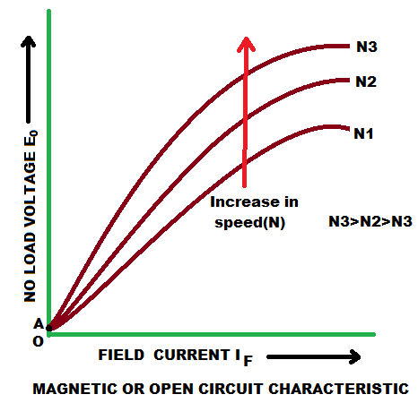
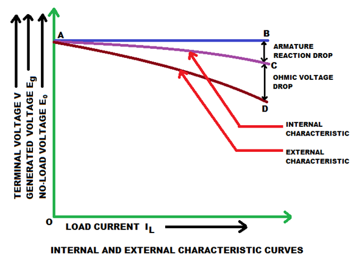

• Internal or Total Characteristic
• External Characteristic
In a separately excited DC generator, the field winding is excited by an external independent source. There are generally three most important characteristic of DC generator:
Magnetic or Open Circuit Characteristic of Separately Excited DC Generator
The curve which gives the relation between field electric current (If) and the generated voltage (E0) in the armature on no load is called magnetic or open circuit characteristic of a DC generator. The plot of this curve is practically same for all types of generators, whether they are separately excited or self-excited. This curve is also known as no load saturation characteristic curve of DC generator. Here in this figure below we can see the variation of generated emf on no load with field electric current for different fixed speeds of the armature. For higher value of constant speed, the steepness of the curve is more. When the field electric current is zero, for the effect residual magnetism in the poles, there will be a small initial emf (OA) as show in figure.

Let us consider a separately excited DC generator giving its no load voltage E0 for a constant field current. If there is no armature reaction and armature voltage drop in the machine then the voltage will remain constant. Therefore, if we plot the rated voltage on the Y axis and load current on the X axis then the curve will be a straight line and parallel to X-axis as shown in figure below. Here, AB line indicating the no load voltage (E0). When the generator is loaded then the voltage drops due to two main reasons-
1) Due to armature reaction,
2) Due to ohmic drop ( IaRa ).
Internal or Total Characteristic of Separately Excited DC Generator
The internal characteristic of the separately excited DC generator is obtained by subtracting the drops due to armature reaction from no load voltage. This curve of actually generated voltage ( Eg ) will be slightly dropping. Here, AC line in the diagram indicating the actually generated voltage (E_g ) with respect to load current. This curve is also called total characteristic of separately excited DC generator.
External Characteristic of Separately Excited DC Generator
The external characteristic of the separately excited DC generator is obtained by subtracting the drops due to ohmic loss ( Ia Ra ) in the armature from generated voltage ( Eg ).
Terminal voltage(V) = Eg - Ia Ra.
This curve gives the relation between the terminal voltage (V) and load current. The external characteristic curve lies below the internal characteristic curve. Here, AD line in the diagram below is indicating the change in terminal voltage(V) with increasing load current. It can be seen from figure that when load current increases then the terminal voltage decreases slightly. This decrease in terminal voltage can be maintained easily by increasing the field electric current and thus increasing the generated voltage. Therefore, we can get constant terminal voltage.

Separately excited DC generators have many advantages over self-excited DC generators. It can operate in stable condition with any field excitation and gives wide range of output voltage. The main disadvantage of these kinds of generators is that it is very expensive of providing a separate excitation source.
 by
by {kind=link}